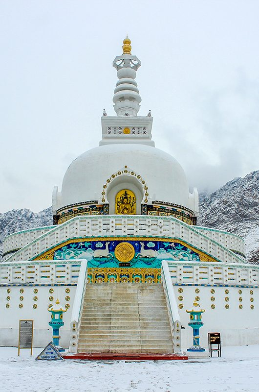
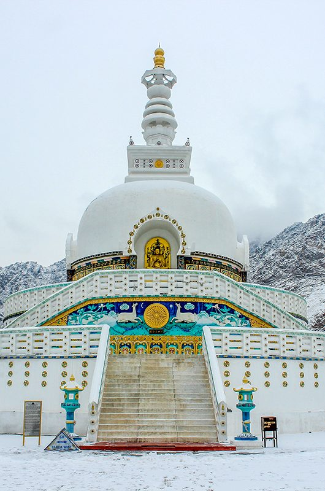

India offers wonderful vacation experiences thanks to its diverse fauna, topography, and cultural heritage. As its name implies, Explore India is a travel agency that can help you organize any journey around India by offering its curated services for each client requirements. We are one of the best and most reputable travel agencies in India, serving clients from all over the world. Through an established network, we have a professionally run travel engine that focuses mostly on planning adventure, beach, cultural, religious, hill station, and wildlife tours all over the world.


 


India offers a diverse range of travel experiences, from historical sites like the Taj Mahal to stunning natural landscapes like the Himalayas. For a memorable trip, consider exploring the Golden Triangle (Delhi, Agra, Jaipur), visiting hill stations, or exploring the beaches and backwaters of South India. Remember to plan your trip based on the season, as India experiences various weather patterns.
Indian music uses just-intonation tuning, unlike some modern Western classical music, which uses the equal-temperament tuning system. Also, unlike modern Western classical music, Indian classical music places great emphasis on improvisation. Indian music is increasingly popular globally. A survey ranked India 20th for global music influence and 6th for uniqueness. Global consumption of Indian music has seen a significant jump, with a 2000% increase in the last five years. This growth is particularly noticeable in countries like Turkiye, Brazil, and Italy.